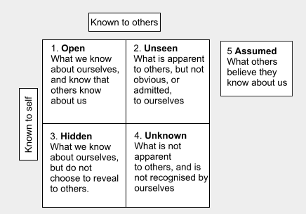
Probabilistic Programming - Medicine
M Class: Bayesian Models and Causality
W Lab: Bayesian Belief Networks with PyMC3
F Discussion: Affective AI and Fairness, Accountability and Trust
The Bayesian statistician Bruno de Finetti (1906–1985) began his book on probability theory with the declaration: “PROBABILITY DOES NOT EXIST” The capitals appeared in the original, so I imagine de Finetti wanted us to shout this statement. What he meant is that probability is a device for describing uncertainty from the perspective of an observer with limited knowledge; it has no objective reality.
- Richard McElreath in "Statistical Rethinking"
Unfortunately, we mere mortals lack omniscience and our reasoning is crippled by irrational and instinctive heuristics programmed by evolution over 150k years. To compensate, humans have created systems of logic and statistics to help us derive truth.
Making good decisions in the face of uncertainty is the focus of this week. Statistics and probabilistic thinking can help overcome bias and quantify uncertainty inherent in virtually every real-world instance of decision making. This is the week we study methodologies and computational tools for overcoming the many human cognitive shortcomings raised in other weeks of this course: impoverished and distorting sensory systems (week 1: Data), selective storytelling (week 3: Visualizations), imprecise/fuzzy language (week 5: Language) and evolutionarily programmed cognitive biases (week 11: Social Networks).
We introduce basic statistics with a particular focus on Bayesian Statistics (vs the more common Frequentist approach). Bayesian Statistics was seen as unorthodox until recently and largely relegated to a few particular niches. Today, Probabilistic Programming and Bayesian Statistics are in a renaissance and are two of the most fascinating, practical and underutilized intellectual concepts in our entire course.
We'll explore how to implement probabilistic reasoning with a variety of computational constructs including data structures (Bloom Filters), state diagrams (Hidden Markov Models) and programming frameworks (PyMC3 or Pyro). We'll introduce Python's statistical library statsmodels and visualization library matplotlib and how they work with Pandas.
On Friday we'll review common errors where statistical thinking can just as easily mislead rather than reveal truth. We'll see some of the statistical, methodological and institutional sources of accidental and intentional errors behind the current 'Replication Crisis' in areas like psychology and drug discovery. Finally, we'll explore the impact of statistical reasoning, the trend to quantifying everything, including the self, and discuss the limits of how much of our humanity can be captured in probabilistic statistical models.
Monday Presentation:
- ANOVA 1: Visual Displays of Data and Summary Statistics Methods Consultants of Ann Arbor (1:25-32:15 ONLY) Dec 2014
- The Danger of Mixing up Causality and Correlation, Ionica Smeets, TEDxDelft (5:56) Nov 2012
- Correlation CAN Imply Causation, Physics Minute (0:00-3:00 ONLY) Aug 2017 + (Footnote 1:25)
- Causality (10:44) Systems Innovations, Sep 2016
- Seeing Theory (Chp 1-3), Brown University 2018 (Print out last completed exercise of all 3 section and email as proof of homework. You can scan over any math and instead experiment with the interactive demos to gain an intuitive understanding of the concepts presented. We'll explain the details in class.)
- Simpson's Paradox, Minute Physics (0:00-4:00 ONLY) Oct 2017
Wednesday Lab: (Lots of very short videos)
- Your Brain is not a Bayes Net, Julia Galef (8:57) Mar 2016
- Bayes Theorem and Making Probabilty Intuitive (15:00) 3Blue1Brown, Dec 2019
- Seeing Theory (Chp 5-6), Brown University 2018 (Print out last completed exercise in these two sections and email as proof of homework)
- An Intro to Probabilistic Programming with Uber's Pyro, Siraj Raval (0:00-5:30, 7:40-8:10 ONLY) Nov 2017
- A Friendly Introduction to Bayes Theorem and Hidden Markov Models, Luis Serrano (0:00-20:00 ONLY) Mar 2018
- This is How Easy it is to Lie with Statistics (18:30) Zac Star, Feb 2019
Friday Discussion:
- Quiz Probability
- Superforecasting: How to Predict the Future (Philip Tetlock Book Review) (4:40) Practical Psychology, May 2016
- You're Wrong About More Than You Think (23:00) Zac Star, Jun 2019
- Is Most Published Research Wrong? (12:00) Veritasium, Aug 2016
- If on a Winter's Night a Traveler, Italo Calvino, 1979
- RFK Jr.'s Response From His Family That Politico Would Not Publish: American's Can Handle an Open Discussion, Robert F. Kennedy, GreenMedInfo.com, Aug 2019
- Formalizing Emotion Concepts Within a Bayesian Model of Theory of Mind, Rebecca Saxe and Sean Dae Houlidan, Current Opinion in Psychology 2017 (Using Bayesian Models to create ToM models and integrate with the human API)
- Court of Appeal Bans Bayesian Probability (and Sherlock Holmes), David Spiegelhalter, Statistical Lab in the University of Cambridge, Feb 2013 (Statistical Models as evidence in court)
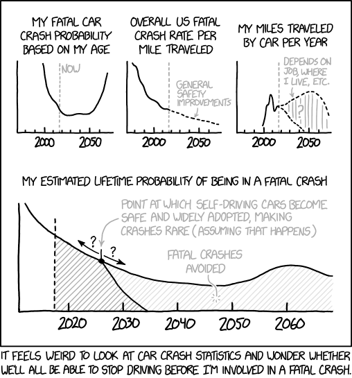
Quiz Topics:
- Cognitive Biases: (From our videos be able to define): selective perception, unreliable memory, Lake Wobegone Effect, Framing Effect, Availability Bias, and Confirmation Biases
- Behavioral Economics: (From video on Nobel-Prize winning Behavioral Economists Khaneman and Tversky be able to describe) Asymmetric risk/reward perception (Loss Aversion cognitive bias)
- Statistics: Be able to identify these goals: (a) Extract signal from noise, (b) yield testable and/or measurable predictions, (c) control for cognitive biases (and other sources of errors), (d) account for alternative explanations
- Sources of Survey Statistical Errors: Be able to identify these three categories of statistical error in Fig.1: (a) Sampling (blue e.g. non-representative sample of population) vs (b) Non-Sampling Administrative Errors (purple e.g. statistical errors or biases) and (c) Non-Sampling Response Errors (green e.g. subjects do not give honest responses)
- Data Fallacies (Statistical Errors): Know the first 3 fallacies listed in Fig.2 below
- Replication Crisis: Be able to identify the top 5 motivations listed in the Nature survey in Fig.3 below
- Bayesian Network: (know the italicized characteristics here) A graph used to model uncertainty and dramatically reduce complexity by reducing all possible interactions between nodes to only those with explicit cause-effect relationships each quantified with conditional probability tables) Fig.4 below
- When Correlation supports Causality? (all involve temporal ordering) (a) Gold standard of large randomized double blind trials, (b) known mechanism of action, (c) all possible alternative causal mechanisms identified and ruled out
- Hidden Markov Model: Be able to identify the italicized characteristics here in a multiple choice question: (see Fig.5 below) A HMM is a statistical model in which a system is modeled by a graph consisting of probabilistic transitions between unobserved states which may also be associated with observable data that depend upon emission probabilities.
- Bayesian Data Flow: Be able to correctly label components of Fig.6 below
- RFK's Objection to Vaccination: Be able to identify his top 6 objections to the current practice of vaccination: (a) Financial Conflicts of Interests, (b) Regulatory Capture, (c) Blanket Immunity with history of criminal abuse ($35B in penalties since 2009), (d) No Safety Testing despite i. 400 FDA suspected adverse reactions, ii. IOM evidence of causal links and iii. the only safety study ever conducted showing elevated autism rates, (e) Refusal to conduct mandated Safety Studies or fix Vaccine Adverse Events Reporting System (VAERS <1% effective), (f) Dramatic rise in rates of autism, anxiety, depression, falling IQ/special ed, etc.
- Characteristics of Superforcasters: Be able to identify these 5 characteristics: (a) Humble (detach ego always be learning) (b) Cautious, (c) Unbiased (be open minded and welcome new/contradictory information), (d) Growth Mindset/Grit (always strive to learn more, accept defeat, learn from mistakes, and carry on), (e) Broad Background and Factbase (know basics of psychology, history, economics, etc, how they interrelate and facts like important dates, figures and facts) and (f) Bayesian Thinking (from interviews with authors elsewhere)
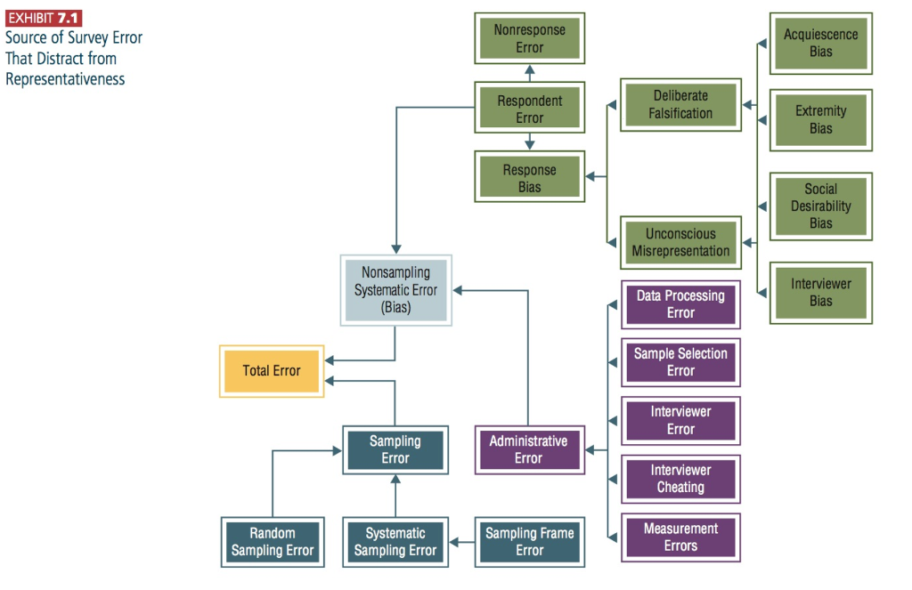


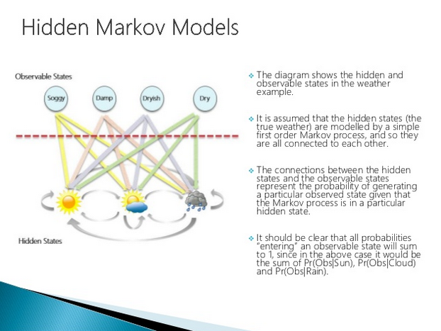
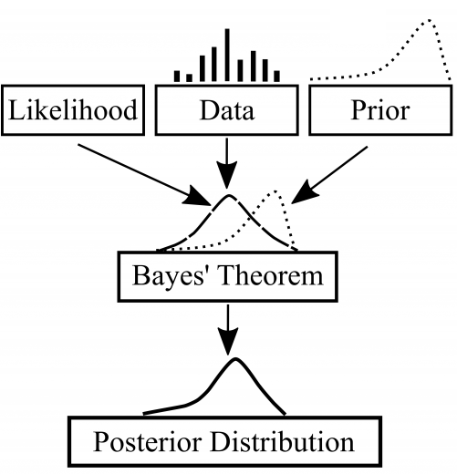
Reference (not on quiz):
“The strongest predictor of rising into the ranks of superforecasters is perpetual beta – the degree to which one is committed to belief updating and self-improvement. It is roughly three times as powerful a predictor as its closest rival, intelligence.” – Philip E. Tetlock and Dan Gardner

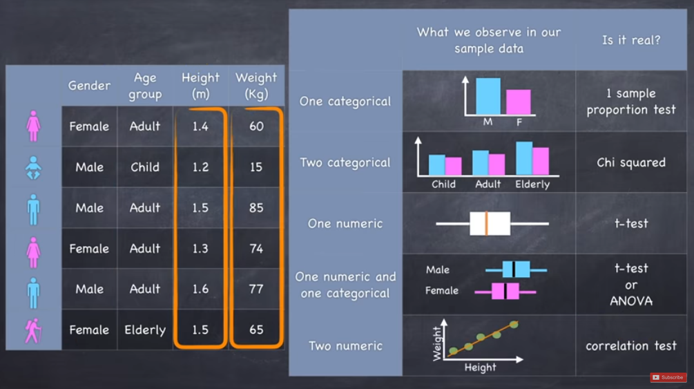
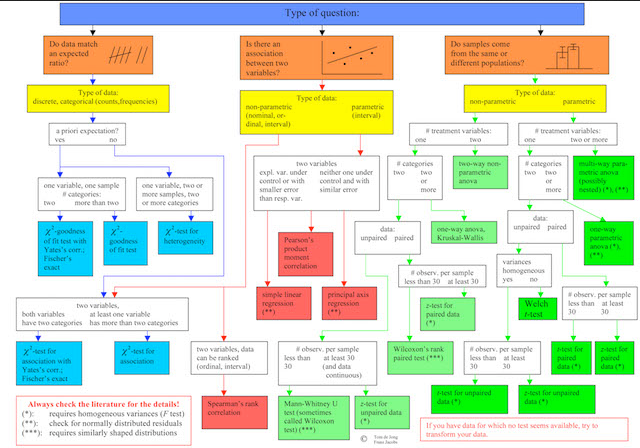


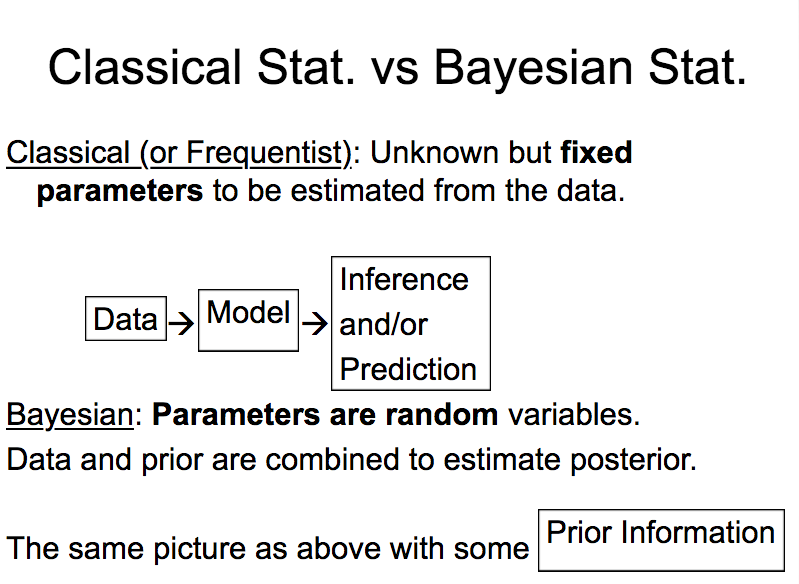
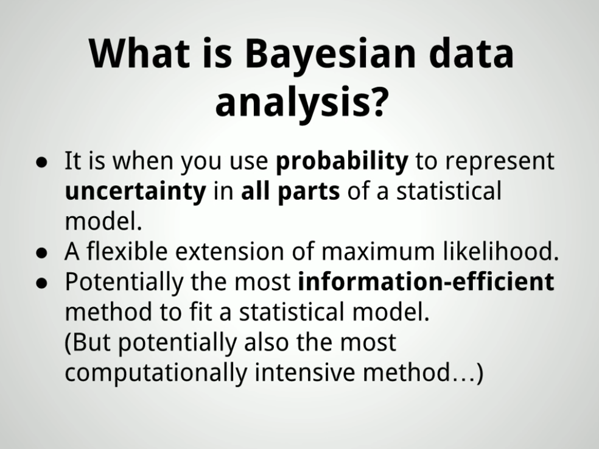
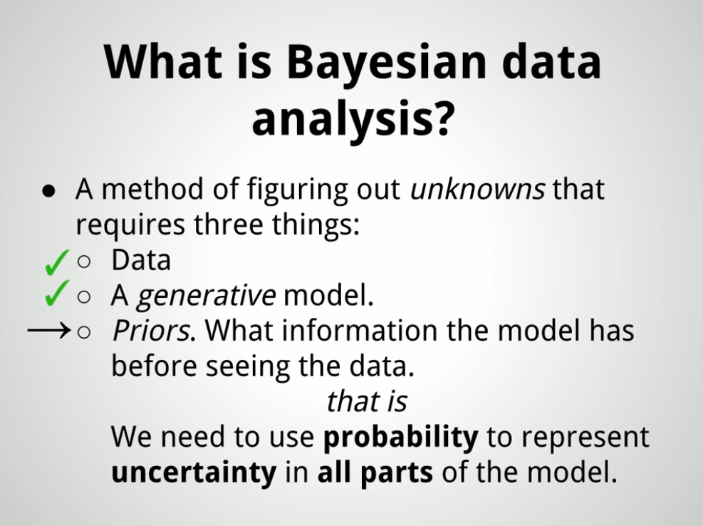
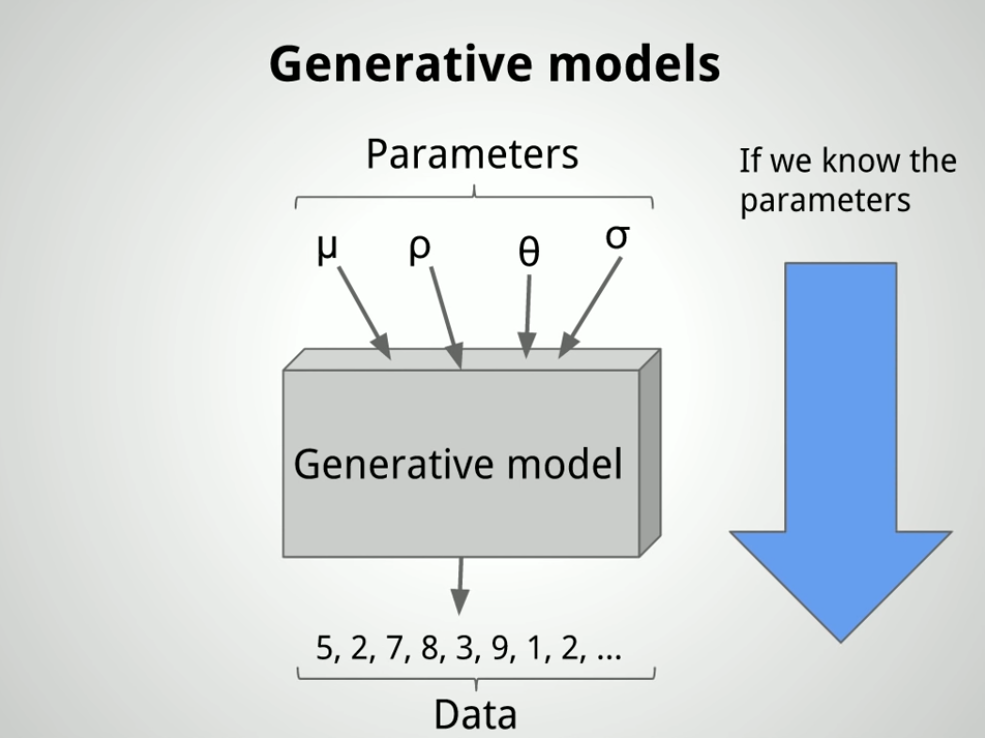
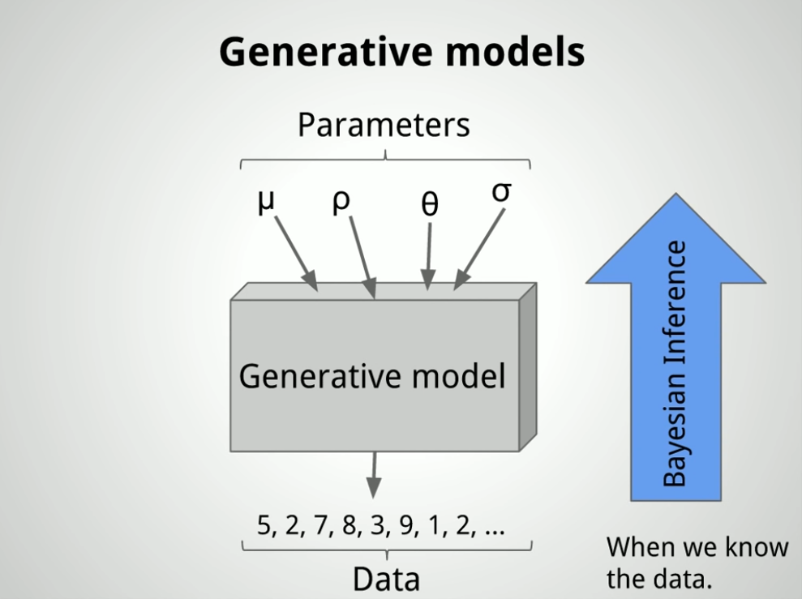
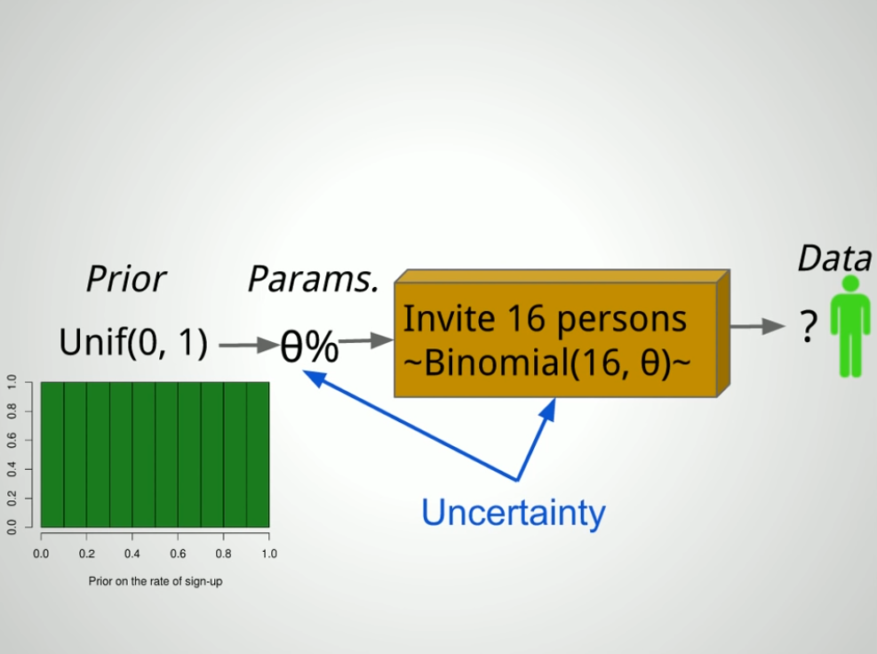
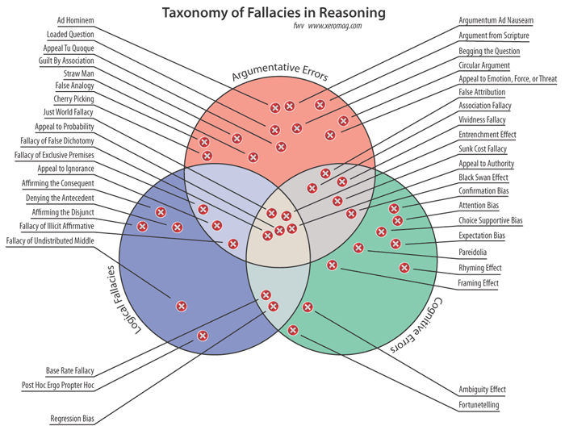
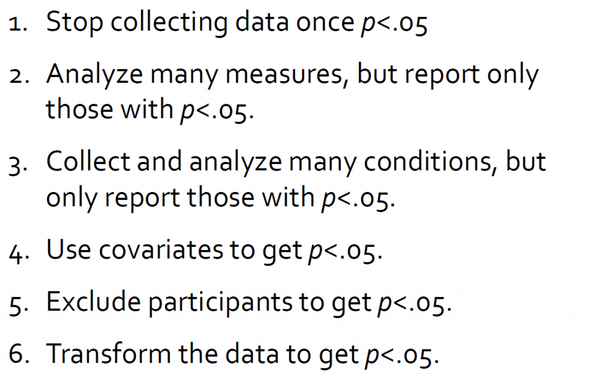
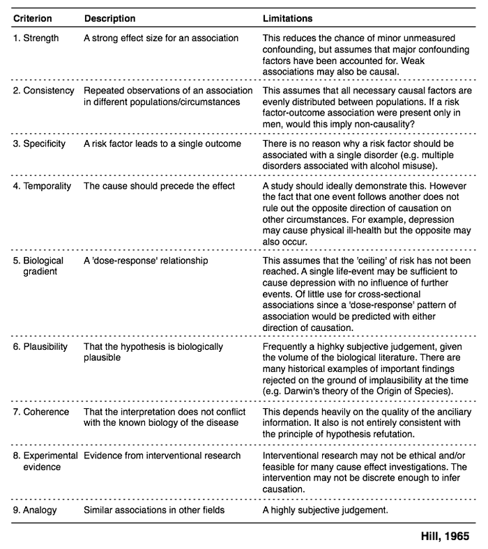